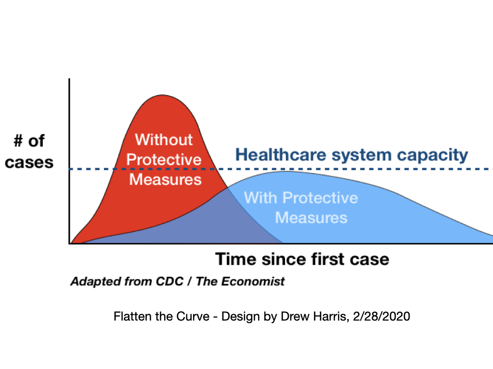

Biography
Dr. Drew Harris is a population health and health policy educator, presenter, consultant and advocate based in Philadelphia, PA, USA. Building on his experience in public health preparedness, he designed and disseminated an infographic depicting why “flattening the curve” of an epidemic was critical for managing an overwhelming surge of hospital admissions. His graphic has become the defining image of the COVID-19 pandemic. Sought out for comment in various media outlets throughout the world.

As Director of the Population Health & Health Policy programs at JCPH, Dr. Harris designed the nation’s first masters degree programs in Population Health and Population Health Intelligence for working health professionals. He developed and led the JCPH Population Health Academy, a five-day executive-level program for practicing health professionals. He also designed and directed the Scholarly Inquiry – Health Policy program at the Sidney Kimmel Medical College in Philadelphia, PA.
At Jefferson, Dr. Harris created and taught the Essentials of Population Health, Health Policy: Analysis and Advocacy, Population Health Management Applications and capstone seminar courses in the Health Policy and Population Health tracks. In 2016, he was awarded the Master of Online Learning in recognition of his high achievement in online teaching. His research interests focus on vaccine exemption policy.
Dr. Harris is a member of The Experts: Health panel for the Wall Street Journal (WSJ.com) and Philadelphia Inquirer Health Advisory Panel. He is a regular author of health policy analysis and opinion pieces. He presents and consults on population health issues to professional organizations, societies and healthcare organizations, including the American College of Healthcare Executives (ACHE).
Dr. Harris is a board director and advisor to Kinde, a UK/USA-based social media company developing an app to promote mental health. He was the Founding Chairman of the NJ Public Health Institute, an independent, non-partisan organization dedicated to researching, developing and advocating for pro-public health policies.
He was President of the New Jersey Association for Biomedical Research, an organization dedicated to serving the interests of the biomedical research community. Dr. Harris oversaw NJABR’s administration, educational, outreach and advocacy initiatives, and was the organization’s spokesperson. He developed several unique research-specific case study-based outreach programs to help high-school students better understand drug-discovery and outbreak investigation and encourage them to pursue careers in the life sciences. With funding from the US Department of Labor WIRED program through grants with the Bio1 and Delaware Valley Innovation Network consortia, he organized several events to advance and support New Jersey’s life science workforce.
Previously, Dr. Harris was the Assistant Director of the New Jersey Center for Public Health Preparedness at the University of Medicine and Dentistry of New Jersey and Assistant Professor in the UMDNJ School of Public Health. In that role, he developed, coordinated and led many education, training and research projects addressing a variety of issues including public health law, assessment and preparedness through grants with the CDC, New York City Department of Health and Mental Hygiene, the New Jersey Department of Health and Senior Services, and other state and federal agencies and private foundations. He conceived and managed the Public Health Leadership Initiative for Emergency Response (PHLIER)—an eight-month statewide fellowship program for New Jersey’s emerging public health leaders. He led the Tick Learning and Education System (TickLES) team. This group developed a tick awareness video and game for middle-schoolers under a PESP grant from the US Department of Environmental Protection to the UMDNJ-NJ Medical School Department of Preventive Medicine and Community Health where he currently holds an Adjunct Assistant Professor appointment.
Dr. Harris served as an at-large member of the American Public Health Association (APHA) Executive Board and is a past president of the New Jersey Public Health Association (NJPHA), and past member of the APHA’s Education Board. Dr. Harris is active with several public health and healthcare organizations and has been involved in statewide public health campaigns and committees working to guarantee universal access to health care; control diabetes, obesity and tobacco use; remove barriers to community-based research; and ensure that non-profit health insurance assets are reserved for public health and healthcare purposes. Other activities include a stint as a radio talk show host for “HouseCalls,” a call-in show that focused on health care and public health topics.
Dr. Harris is a podiatric physician by training. In private practice, he concentrated on the care of people with diabetes and non-healing wounds before making his public health avocation his vocation by taking a position at UMDNJ. He earned his Masters of Public Health with a concentration in Health Care Organization and Administration from the UMDNJ-School of Public Health. His research interests lie at the vital nexus of public health science and practice, public policy and politics.
Policy Analysis & Opinion
2017
“Trump plan’s threat to care.” Philadelphia Inquirer. Health Section, pG3. 10/8/17.
“Trump wants to sell health insurance across state lines. Why that’s a bad idea.” Health Cents, Philly.com. 10/4/17.
“Memo to Gov. Chris Christie – Hands off Horizon.” Op-ed, NJ Spotlight. 5/17/17.
“Trump’s proposed health spending cuts could wreak economic havoc.” Health Cents, Philly.com. 3/29/17.
“Obamacare repeal without replacement is an immoral experiment.” Health Cents, Philly.com. 2/28/17.
2016
“Election revealed distrust of institutions – but people still need coverage.” Philadelphia Inquirer. Health Section, p2. 11/20/16.
“Flu season is the time to appreciate the value of adult vaccinations.” Health Cents, Philly.com. 9/31/16.
“The New Data Experts Our Health-Care Professionals Need.” Wall Street Journal, The Experts. 9/29/16.
“When Adequate Food Is What the Doctor Prescribes.” Wall Street Journal, The Experts. 9/21/16.
“Better health is the goal of the ACA’s radical changes in how providers are paid.” Health Cents, Philly.com. 8/15/16.
“Is your doctor burnt out and why should you care?” Health Cents, Philly.com. 6/2/16.
“When it comes to the health of the poor, place matters” Health Cents, Philly.com. 4/22/16.
“Candidates reexamine concept of public option.” The Philadelphia Inquirer, G-2. 3/6/16.
“Remember Obamacare’s public option – it’s back.” Health Cents, Philly.com. 2/29/16.
“Four reasons why getting care from a single provider network is better for your health.” Health Cents, Philly.com. 1/3/16.
2015
“Taking the glamour out of guns will save lives.” Health Cents, Philly.com. 10/14/15.
“New Jersey’s vaccination loophole.” The Public’s Health, Philly.com. 10/8/15.
“Differing desires of patients, clinicians.” The Field Clinic, Philly.com. 8/30/15.
“What do we really want from our health care?” Health Cents, Philly.com. 8/21/15.
“Beyond King v. Burwell, Obamacare’s many layers can make health care better – with a little help.” The Field Clinic, Philly.com. 6/23/15.
“Until N.J. tightens vaccine exemptions, state’s children and adults at risk.” NJ Star-Ledger, editorial. 5/14/15.
“What is health, anyway?” The Field Clinic, Philly.com. 5/6/15.
“How Big Data Will Customize Our Health Care.” Wall Street Journal, The Experts. 5/1/15.
“Reflections and Projections: Prevention, Policy and Health,” Population Health Matters: Vol. 28: Iss. 1, Article 2. http://jdc.jefferson.edu/hpn/vol28/iss1/2. Winter 2015.
“The Key to Convincing Parents to Vaccinate Their Children.” Wall Street Journal, The Experts. 3/24/15.
“Why Americans Pay Too Much for Too Little Health Care.” Wall Street Journal, The Experts. 2/17/15.
“Another Obamacare innovation: Medicare payments that reward quality, efficiency.” The Field Clinic, Philly.com. 2/2/15.
2014
“To your health – its more complicated than you might think.” The Field Clinic, Philly.com. 12/23/14.
“Ebola arrives on U.S. soil, but don’t blame the CDC.” The Field Clinic, Philly.com. 10/10/14.
“Two Ways Big Data Is Reshaping Health Care.” Wall Street Journal, The Experts. 9/19/14.
“How Unvaccinated Children Hurt Everybody.” Wall Street Journal, The Experts. 9/18/14.
“Data, data everywhere, but not a bit that helps your doctor to think.” The Field Clinic, Philly.com. 8/21/14.
“The Case for Outcome-Oriented Health-Care Information.” Wall Street Journal, The Experts. 6/9/14.
“Narrow Networks in Obamacare Plans Could Lead to Better Provider Teamwork.” The Field Clinic, Philly.com. 5/19/14.
“Stop Giving Dying People Care They Don’t Need–or Want.” Wall Street Journal, The Experts. 2/27/14.
“Why You Need a Primary-Care Doctor.” Wall Street Journal, The Experts. 2/25/14.
“Why the primary care shortage may not be as bad as we think.” The Field Clinic, Philly.com. 2/3/14.
2013
“Obamacare Glitches Were Predictable – And Easily Solved.” The Field Clinic, Philly.com. 12/18/13.
“Bring Back the ACA’s Public Option!” Wall Street Journal, The Experts. 11/18/13.
“The Fight to the Death Against Obamacare is Unprecedented.” The Field Clinic, Philly.com. 9/30/13.
“New Jersey Vaccine Mandates: The Confluence of Regulations, Rights, and Religion.” Population Health Matters, Spring 2013, 29(2), 6-7.
“The Untold Story of Population Health [commentary].” Population Health Matters, Spring 2013, 29(2), 3.
“U.S. health care: We’re far from No. 1: Opinion. [Op-ed]” The Star-Ledger, 1/23/2013.
“Now it’s Christie’s turn to decide on expanding Medicaid and his decision should be easy.” The Field Clinic, Philly.com. 2/6/2013
“U.S. health care: We’re far from No. 1.” [Op-ed] The Star-Ledger, 1/23/2013.
2012
“Public Health is Political.” [blog] SurroundHealth.com, 4/20/2012.
“From Health Policy to Population Health: Impressions and Highlights of Recent Conferences.” Population Health Matters. Vol. 30: Iss.2, Article 10.:
“The Population Health Revolution.” Population Health Matters, 10/13
“The Fight to the Death Against Obamacare is Unprecedented” Philly.com
“Public health decisions should be based on science,” NJ Star Ledger, 2/26/12
2011 & earlier
Objections to vaccination must be validated [op-ed, 2/2/11]
NJ Voices Blog Includes several articles with more added each week.
Hospitals’ infection control plan won’t wash. [op-ed, 8/30/07]
Better to put our money on preventing disease, [op-ed, 8/18/07]
Potentially the unhealthiest cut of all, [op-ed, 11/14/06]
Jersey looks like a pipsqueek on public health, [op-ed, 3/16/07]